aWas sagt der Mann? Hören Sie noch einmal und kreuzen Sie an.
bWie verabschiedet man sich in Ihrer Muttersprache? Können Sie die Ausdrücke in a übersetzen?
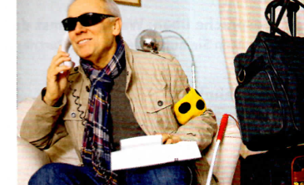
11Gehen Sie durch den Kursraum und verabschieden Sie sich von den anderen.
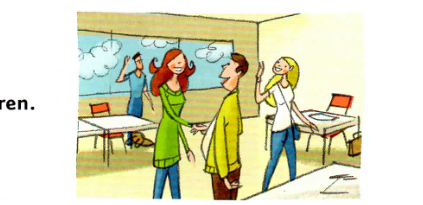
Grammatik
trennbare Verben an|rufen → Ich rufe dich an. ein|kaufen → Vielleicht kaufe ich noch was ein.
trennbare Verben im Satz
Aussage
Vielleicht
kaufe
ich noch etwas ein.
W-Frage
Wann
rufst
du mich an?
Ja-/Nein-Frage
Rufst
du mich heute an?
Kommunikation
Durchsagen Am Bahnsteig zwei fährt die U2 ein. Bitte Vorsicht! Nächster Halt: Innsbrucker Ring. Achtung! Bitte zurückbleiben.
am Bahnhof: sich informieren Wo fährt der Zug nach … ab? — Auf Gleis … Wann kommst du / kommt der Zug aus … an? — Um … Uhr. Wo steigen wir aus? — Am Bahnhof / … Wo steigst du ein? — Auf Gleis … Holst du mich (am Bahnhof / …) ab? — Ja, gern. Wann kommst du an?
ein Telefonat beenden Gut, dann … / Also dann … Bis morgen. / Bis bald. Mach’s gut! / Pass auf dich auf! Auf Wiedersehen! / Tschüs!
Modul 460
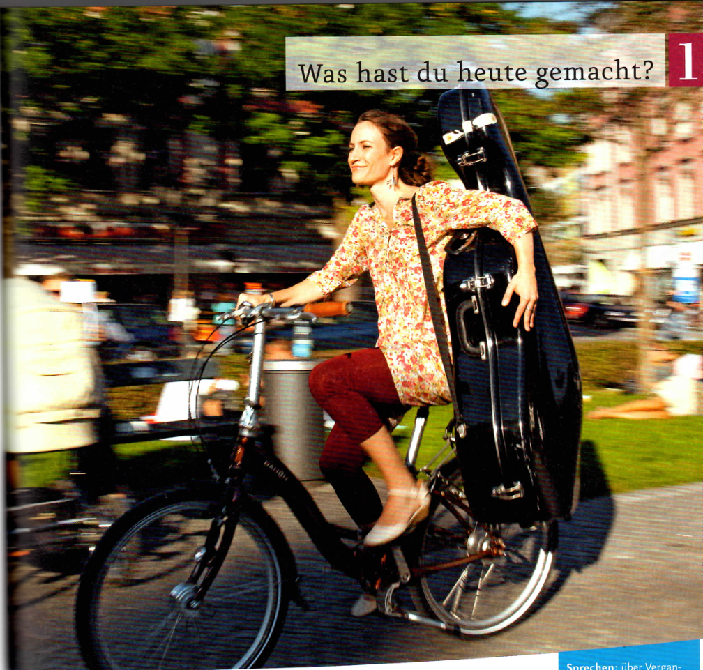
1Sehen Sie das Foto an. Fahren Sie auch gern Fahrrad?
Wie oft und wohin?
täglich | zwei- bis dreimal in der Woche | nur am Wochenende | fast nie | nie zum Einkaufen | zur Arbeit | ins Café/Schwimmbad/Kino/…
■ Also, ich fahre sehr gern Fahrrad. Ich fahre täglich zur Arbeit und zum Einkaufen. ▲ Wirklich? Ich fahre nie Fahrrad. Ich habe gar kein Fahrrad.
2Sehen Sie das Foto an und hören Sie.
Wer ist Anja? Was meinen Sie?
„Ich glaube, Anja ist 29 Jahre alt und arbeitet als …“
Modul 461
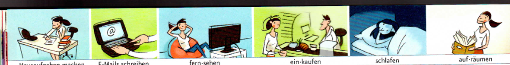
3Was macht Anja heute?
Lesen Sie den Terminkalender. Spielen Sie dann ein Telefongespräch mit Anja.
Montag 3. Juni
Termine:
10 Uhr
Büro
13 Uhr
13:15 Uhr Essen bei Barbara
16 Uhr
ab 16:00 Uhr Cello üben
19 Uhr
bis 20:30 Uhr Orchesterprobe
Notizen:
Dr. Weber anrufen!!! Nora und Marc anrufen Firma Bergmair / Küchenschrank fertig? Geschenk für Tante Betti kaufen Wein für die Party kaufen
■ Hallo Anja, was machst du gerade? ▲ Ich frühstücke gerade. Um Viertel vor neun gehe ich ins … ■ Und was machst du heute noch? ▲ Ich rufe heute noch Frau Dr. Weber an … Heute Abend habe ich von sechs bis halb neun Orchesterprobe.
Wann? Von 9 Uhr bis 13 Uhr · Ab 9 Uhr
4Was machen Sie heute nach dem Deutschkurs?
Sehen Sie das Bildlexikon zwei Minuten lang an. Schließen Sie dann Ihr Buch. Ihre Kursleiterin / Ihr Kursleiter nennt die Tätigkeiten. Machen Sie das heute? Dann stehen Sie auf.
5Was hast du heute gemacht?
aLesen Sie die E-Mails auf Seite 63 und kreuzen Sie an. Was meinen Sie?
Modul 462
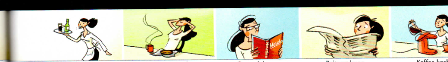
Hallo mein Schatz,
geht’s Dir gut? Gibt’s was Neues? Was hast Du denn heute alles ? Hast Du Frau Dr. Weber ? Was hat sie ? Und wie geht’s dem Baby? Du hattest auch Orchesterprobe heute, richtig? Habt Ihr fleißig für das Konzert ?
Hier ist es wie immer: langweilig! Ich habe den ganzen Tag mit Geschäftspartnern und Kunden . Und immer wieder habe ich : Jetzt möchte ich zu Hause sein, bei Dir und nicht in dieser Stadt hier.
Ich freue mich auf Dich! Michi
Hallo mein Liebster,
ich habe auch oft an Dich ! Mit Frau Dr. Weber habe ich heute Morgen . Mit unserem Baby ist alles okay, hat sie gesagt. Sie hat , ich kann noch bis Dezember arbeiten. Ist das nicht super?! Was habe ich noch gemacht? Von neun bis eins habe ich und dann hat mich Babs zum Mittagessen . Wir haben uns ja schon lange nicht mehr , also haben wir viel (und ). Nachmittags habe ich und und am Abend hatte ich Orchesterprobe. Was noch? Ach ja: Ich habe Herrn Bergmair eine Mail . Er hat gleich . Der Küchenschrank ist fertig. Sie bringen ihn am Mittwoch.
Ich freue mich schon sooo auf Dich! Anja
einladen
ich
lade ein
du
lädst ein
er/sie
lädt ein
bLesen Sie die E-Mails noch einmal. Markieren Sie die Perfekt-Formen und ergänzen Sie die Tabelle.
aWer hat was wann gemacht? Arbeiten Sie auf Seite 92. bPantomime-Spiel: Was haben Sie letzten Freitag gemacht? Machen Sie eine Bewegung. Die anderen raten.
■ Was habe ich letzten Freitag gemacht? ▲ Hast du Freunde eingeladen? ■ Nein, ich habe keine Freunde eingeladen? / Nein, habe ich nicht. ▲ Hast du Sport gemacht? ■ Ja.
letzten Freitag/Monat · letztes Jahr · letzte Woche
7Eine E-Mail schreiben: Arbeiten Sie zu zweit auf Seite 96.
bVerwenden Sie die Notizen und schreiben Sie Sätze. cGeben Sie Ihrer Partnerin / Ihrem Partner Ihre Sätze. Sie/Er korrigiert Ihren Text (Rechtschreibung/Grammatik).
Ich habe um sieben Uhr gefrühstückt. Von neun bis zwölf habe ich gearbeitet. …
Grammatik
temporale Präpositionen von … bis, ab Wann? Von 9 Uhr bis 10 Uhr · Ab 9 Uhr
Perfekt mit haben
haben +
Partizip …-t/-en
regelmäßig
machen
er/sie hat
gemacht
auch so: sagen – gesagt, arbeiten – gearbeitet, …
unregelmäßig
schreiben
er/sie hat
geschrieben
auch so: essen – gegessen, trinken – getrunken, …
trennbar
auf|räumen an|rufen
er/sie hat er/sie hat
aufgeräumt angerufen
auch so: einkaufen – eingekauft, … auch so: einladen – eingeladen, fernsehen – ferngesehen, …
Verben auf -ieren
telefonieren
er/sie hat
telefoniert
auch so: fotografieren – fotografiert, …
Perfekt im Satz
Aussage
Ab 9 Uhr
habe
ich gearbeitet.
W-Frage
Was
hast
du sonst noch gemacht?
Ja-/Nein-Frage
Hast
du Frau Dr. Weber angerufen?
Kommunikation
über Vergangenes sprechen Was hast du heute / gestern / letzten Montag / letzte Woche / … gemacht?
Von neun bis eins habe ich gearbeitet. Ich habe eine E-Mail geschrieben.
Modul 464
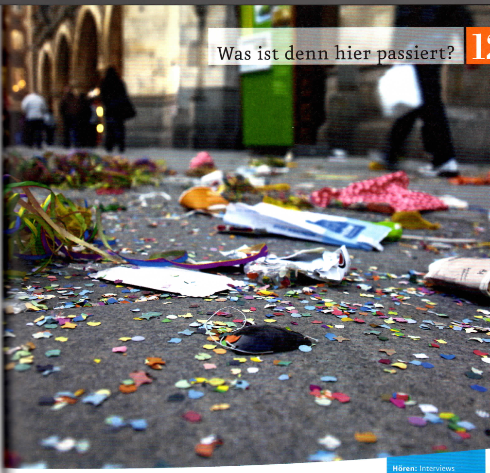
1Sehen Sie das Foto an und hören Sie. Was ist hier passiert?
Was meinen Sie?
Geburtstag | Hochzeit | Silvester | Karneval …
„Ich glaube, die Leute haben Geburtstag gefeiert.“
2Wann haben Sie das letzte Mal gefeiert? Erzählen Sie.
Wann? gestern | letzte Woche | letzten Monat | … Was? Geburtstag | Hochzeit | Silvester | Karneval | … Wo? auf der Straße | im Restaurant | zu Hause | …
■ Ich habe letzte Woche Geburtstag gefeiert. ▲ Wir haben im Restaurant gefeiert. Es hat viel Spaß gemacht. Wir haben viel getanzt und gelacht.
Modul 465
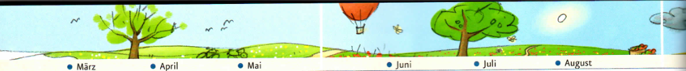
3Feste und Events
aWas passt? Hören Sie und ordnen Sie zu.
A
In der Nacht vom 31. Dezember auf den 1. Januar feiern Menschen in der ganzen Welt Silvester und Neujahr. Die größte Silvester-Open-Air-Party (mit einer Million Besuchern!) gibt es seit 1995 am Brandenburger Tor in Berlin.
B
Den Karneval in Köln* gibt es seit 1823. Er fängt am 11. November um 11:11 Uhr an und hört im Februar oder im März auf. Die ganz großen Karnevalsfeste sind immer an den letzten sechs Tagen. * Karneval (auch: „Fasching“ oder „Fasnacht“) gibt es auch an vielen anderen Orten.
C
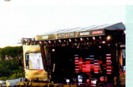
Seit 1985 gehen viele Rockmusik-Fans im Mai oder Juni zu „Rock am Ring“. Das Festival am Nürburgring in der Eifel dauert zwei bis drei Tage. Rund um die Uhr können die 70.000 bis 80.000 Besucher ihre Lieblingsbands hören.
D
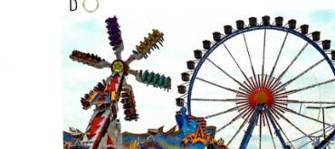
Seit 1810 gibt es das Oktoberfest in München. Es ist jedes Jahr im September und Oktober und dauert ungefähr zwei Wochen. Es kommen etwa fünf bis sechs Millionen Besucher.
bLesen Sie und notieren Sie. Hilfe finden Sie im Bildlexikon.
Das Oktoberfest / Der Karneval / … ist in … / gibt es seit … ist im September / im Herbst … dauert … und hat … Besucher
Wann?im Oktober/Herbst
cAuf welches Fest möchten Sie gern gehen? Sprechen Sie.
■ Ich möchte gern Silvester in Berlin feiern. Und du? ▲ Ja, ich auch. Ich tanze gern. ● Rock am Ring im Mai? Das klingt interessant. Ich liebe Rockmusik.
Modul 466
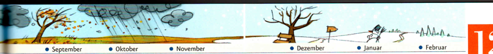
4Warst du schon mal in Deutschland auf einem großen Fest?
aWas ist richtig? Hören Sie die Interviews und kreuzen Sie an.
Wohin? München / Deutschland → nach München/Deutschland fahren · die Schweiz / die Türkei → in die Schweiz/Türkei · der Iran → in den Iran
bLesen Sie die Sätze in 4a noch einmal und ergänzen Sie.
geflogen | ist | ist | gekommen
ich bin / er ist … gewesen = ich/er war
5Perfekt üben: Was hat Marc letzte Woche gemacht?
Arbeiten Sie auf Seite 88. Ihre Partnerin / Ihr Partner arbeitet auf Seite 91.
aMachen Sie zu viert ein Jahreszeiten-Poster. Was machen Sie in dieser Jahreszeit gern?
Frühling: Radfahren
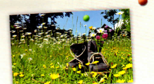
Sommer: …Herbst: Wandern
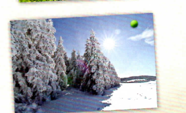
Winter: …
bPräsentieren Sie Ihr Poster im Kurs.
„Im Frühling fahren wir gern Fahrrad.“
Grammatik
temporale Präposition im im + Monat/Jahreszeiten: im Oktober/Herbst
Perfekt mit sein
sein +
Partizip …-en
unregelmäßig
gehen
er/sie ist
gegangen
fliegen
geflogen
fahren
gefahren
kommen
gekommen
trennbar
an|kommen
er/sie ist
angekommen
ein|steigen
eingestiegen
ab|fahren
abgefahren
Kommunikation
über Reisen sprechen (Vergangenheit) Henry ist vor drei Monaten nach Deutschland/Hamburg gekommen. Letztes Jahr ist er nach München / in die Schweiz geflogen.
über Feste sprechen Das Fest heißt … / ist in … / hat … Besucher / dauert … / gibt es seit … Wir haben Musik gehört, getanzt und viele nette Leute getroffen.
Modul 468
Lesemagazin
UNTERWEGS
Der Reise-Blog von Anja Ebner
Freitag, 12. April / 22:15 Uhr: Um 12 Uhr bin ich losgefahren. Es war nicht viel Verkehr. Schon um 15 Uhr war ich in meinem Hotel in Speyer. Danach bin ich gleich losgegangen. Die Stadt ist über 2000 Jahre alt! Am Abend war ich in einem Restaurant und habe „Pfälzer Saumagen“ gegessen. Das ist eine Spezialität hier: Schweinefleisch mit Kartoffeln. Dazu ein Glas Pfälzer Wein. Sehr, sehr lecker!
Speyerfan_92: Hallo Anja! In Speyer war ich letztes Jahr auch. Hast du das „Technik Museum Speyer“ gesehen? Das ist total interessant. LG, Pit
Samstag, 13. April / 15:30 Uhr: Ich habe bis 10 Uhr geschlafen. Dann habe ich gefrühstückt und bin am Mittag nach Mannheim gefahren. Viele Leute mögen die Stadt nicht so. Ich finde Mannheim super. Ich mag auch die „Söhne Mannheims“ und Xavier Naidoo. So, jetzt kaufe ich noch ein bisschen ein und heute Abend gehe ich in ein Konzert oder zum Tanzen in einen Club. Mal sehen.
Sonntag, 14. April / 10:30 Uhr: Gestern war ich tanzen. Die Musik war toll und die Leute waren sehr nett. Ich habe einen Tipp bekommen: Im Schlosspark von Schwetzingen blühen die Kirschbäume. Das möchte ich sehen, also los!
Sonntag, 14. April / 12 Uhr: Der Tipp war super! So viel Rosa habe ich noch nie gesehen. Ich möchte noch nicht nach Hause fahren. Aber leider ist das Wochenende schon fast vorbei. Wie schade!
Speyer: Maximilianstraße und DomMannheim: Wasserturm mit ParkSchwetzingen: Kirschbäume im Schlossgarten
1Welcher Link passt? Lesen Sie die Texte und markieren Sie den passenden Link.
2Was hat Anja wann gemacht? Lesen Sie noch einmal und ergänzen Sie die Wochentage.
Modul 469
Film-Stationen Clips 10–12
صفحة الفيديو الأصلية. ملفات الفيديو بتاعة الكليبات ١٠–١٢ مش موجودة في المصادر اللي وصلت. الأسئلة والإجابات هنا من الكتاب ومذكورة زي ما هي، بس من غير الفيديو.
1Mein Weg ins Büro – Was ist richtig? Sehen Sie die Reportage und kreuzen Sie an.
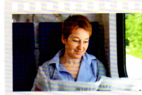
2Martins Tag – Sehen Sie das Videotagebuch, ordnen Sie zu und erzählen Sie dann.
aufräumen und sauber machen | einen Spaziergang machen | frühstücken und Zeitung lesen | zu Abend essen | kochen | schlafen | Silvia anrufen | Silvia im Rosengarten treffen | Jenga spielen
„Gestern hat Martin bis halb zehn geschlafen. Dann …“
3Das war so schön! – Sehen Sie die Diashow und ergänzen Sie.
am Freitag | Annas Geburtstagsfeier | Betriebsfeier | Faschingsfest | Führerscheinprüfung | geschafft | im Winter vor 20 Jahren | in der Firma | langweilig | lustig | Leipzig | letzten Mai | Österreich | toll | vor einem Jahr
ABCD
Modul 470
Projekt Landeskunde
1Öffentliche Verkehrsmittel in Zürich: Was ist richtig?
Lesen Sie die Touristeninformation und kreuzen Sie an.
Unterwegs in Zürich
Die Stadt Zürich hat ein sehr gutes öffentliches Verkehrsnetz. Viele Zürcher fahren nicht mit dem Auto oder dem Velo*, sie fahren mit Bus und Tram. Die öffentlichen Verkehrsmittel sind praktisch und schnell und fahren sehr oft.
Tipps für Touristen: Fahren auch Sie mit öffentlichen Verkehrsmitteln. Mit Bussen, Trams, S-Bahnen oder Wassertaxis können Sie Zürich einfach, bequem und schnell besichtigen. Die Wassertaxis fahren über die Limmat. So können Sie auf der Fahrt Zürich vom Wasser aus besichtigen. Möchten Sie Zürich lieber von oben sehen? Dann nehmen Sie doch eine der vier Bergbahnen und genießen Sie die tolle Aussicht auf die Stadt.
*CH: Velo = Fahrrad
2Ein Tag als Tourist in Zürich
aSie sind am Hauptbahnhof in Zürich, möchten die Stadt besichtigen und dabei alle öffentlichen Verkehrsmittel nehmen. Suchen Sie Informationen im Internet und planen Sie Ihren Tag.
Verkehrsmittel: Bus, S-Bahn, Tram, Wassertaxi, Bergbahn Sie fahren: zum Zoo, zum Botanischen Garten, zum Schweizerischen Landesmuseum, zum Museum Rietberg
Recherchieren Sie im Internet: • Wo sind die Sehenswürdigkeiten? • Wie kommen Sie dorthin? Welche Verkehrsmittel können Sie nehmen? Suchen Sie auch auf der Website der Verkehrsbetriebe Zürich (VBZ).
Planen Sie dann: • In welcher Reihenfolge wollen Sie die Sehenswürdigkeiten besuchen? • Wie lange dauern die Fahrten?
bMachen Sie ein Plakat und erzählen Sie im Kurs von Ihrem Tag.
Erst haben wir den Bus / … genommen und sind zum/zur … gefahren. Das hat … Minuten gedauert. Dann haben wir die S-Bahn / … genommen und sind …
Modul 471
Ausklang
Party Max
Die Woche ist mal wieder nicht so toll gewesen: Von morgens bis abends nur Arbeit und Stress. Doch jetzt ist Freitag und wir wissen: Heute Abend haben wir die Woche schon vergessen.
Tschüs, bis heute Abend. Wir machen wieder ______. Und DJ PartyMax bringt seine Hits ______. Er nimmt uns alle auf, er lädt uns alle ______ und alle sagen: „Danke Max!“ und steigen wieder ______.
Wir steigen ______, Wir fliegen ______ und dann feiern wir zusammen die ganze Nacht. Wir steigen ______, Wir fliegen ______, wir hören nicht mehr ______ bis morgen früh um acht.
Wir steigen ______, Wir fahren ______ und dann feiern wir zusammen die ganze Nacht. Wir steigen ______, Wir fahren ______, wir hören nicht mehr ______ bis morgen früh um acht.
1Lesen Sie den Liedtext und ergänzen Sie. Hören Sie dann und vergleichen Sie.
ein | auf | ab | ein | auf | ein | mit | ein | ab | mit | ein | ab | mit | ab | ein
2Hören Sie noch einmal und singen Sie mit.
3Ihre Musik
aZu welcher Musik tanzen Sie gern? Bilden Sie Gruppen.
zu Rockmusik | zu Popmusik | zu Techno | zu House | zu Reggae | zu Punk | zu Ska | zu Swing | zu Salsa | …
bSprechen Sie in Ihren Gruppen.
• Wo tanzen Sie? • Wann und wie oft tanzen Sie? • Wie heißt Ihre Lieblingsband?
Modul 472
Aktionsseiten
KB | S. 59 Lektion 106Partner A
Wann kommst du an?
aFragen Sie Ihre Partnerin / Ihren Partner und notieren Sie die Antworten. Achten Sie auf die richtige Satzstellung.
■ Wann kommst du an? ▲ Ich komme um 12 Uhr 45 an.
bIhre Partnerin / Ihr Partner stellt jetzt Fragen. Suchen Sie die passende Antwort.
■ Wo steigst du ein? ▲ Ich steige auf Gleis 10 ein.
KB | S. 67 Lektion 125Partner A
Marc feiert gern! Was hat er letzte Woche gemacht?
Fragen Sie Ihre Partnerin / Ihren Partner und ergänzen Sie die fehlenden Informationen.
Montag
Dienstag
Mittwoch
Donnerstag
Freitag
Samstag
Sonntag
19:00 Geburtstag (Köln / Taxi fahren)
18:00 Abschiedsparty (Wien / Bus fahren)
20:00 Konzert (Berlin / Zug fahren)
16:00 Hochzeit (Türkei / fliegen)
■ Wo war Marc am …? ■ Was hat er dort gemacht? ■ Wie ist er in die … / nach … gekommen?
▲ Am … war er in der Türkei / in Köln / … ▲ Er ist in ein Konzert gegangen / hat Geburtstag gefeiert / … ▲ Er ist geflogen / Auto/Taxi gefahren / …
Aktionsseiten88
Aktionsseiten
KB | S. 67 Lektion 125Partner B
Marc feiert gern! Was hat er letzte Woche gemacht?
Fragen Sie Ihre Partnerin / Ihren Partner und ergänzen Sie die fehlenden Informationen.
Montag
Dienstag
Mittwoch
Donnerstag
Freitag
Samstag
Sonntag
19:30 Konzert (Schweiz / fliegen)
21:00 Einweihungsparty (Hamburg / mit André fahren)
15:00 Oma Geburtstag (Bonn / Auto fahren)
■ Wo war Marc am …? ■ Was hat er dort gemacht? ■ Wie ist er in die … / nach … gekommen?
▲ Am … war er in der Türkei / in Köln / … ▲ Er ist in ein Konzert gegangen / hat Geburtstag gefeiert / … ▲ Er ist geflogen / Auto/Taxi gefahren / …
KB | S. 59 Lektion 109
Würfelspiel: Wo steigst du um?
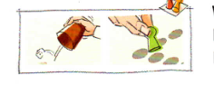
Würfeln Sie und ziehen Sie mit Ihrer Spielfigur. Machen Sie einen Satz. Die anderen überprüfen. Ist der Satz richtig, bekommen Sie einen Punkt. Spielen Sie 10 Minuten. Wer hat die meisten Punkte?
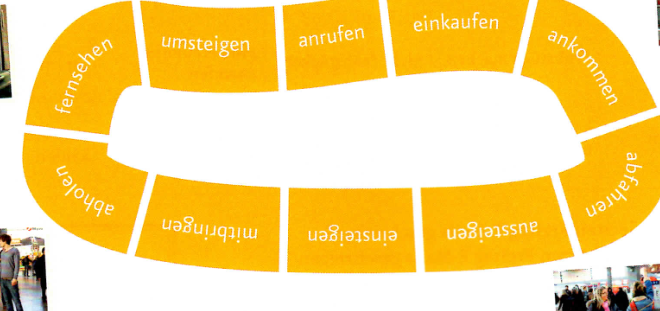
■ Bringst du Schokolade mit? ▲ Gut, der Satz ist richtig. Du bekommst einen Punkt.
Aktionsseiten91
Aktionsseiten
KB | S. 63 Lektion 116a
Aktivitäten-Bingo
aLesen Sie den Fragebogen in b und notieren Sie die richtige Perfektform. Sehen Sie im Wörterbuch nach.
Perfekt im Wörterbuch
le|sen ['le:zn], liest, las; ge|lesen (tr.; hat; etw. l.): 1. einen Text mit den Augen und dem Verstand erfassen: ein Buch, einen Brief, Zeitung lesen; (auch itr.) in einem Lexikon lesen.
bWer hat was wann gemacht? Suchen Sie Personen im Kurs und notieren Sie die Namen. Wer hat zuerst fünf Personen?
■ Hast du letzten Freitag E-Mails geschrieben? ▲ Ja, ich habe letzten Freitag E-Mails geschrieben. ● Nein, letzten Freitag habe ich keine E-Mails geschrieben.
■ Hast du letzten Sonntag keinen Kaffee getrunken? ▲ Doch, ich trinke am Sonntag immer Kaffee.
INFO
schlafen
ich schlafe
du schläfst
er/sie schläft
Aktionsseiten92
Aktionsseiten
KB | S. 59 Lektion 106Partner B
Wann kommst du an?
aIhre Partnerin / Ihr Partner stellt Fragen. Suchen Sie die passende Antwort. Achten Sie auf die richtige Satzstellung.
■ Wann kommst du an? ▲ Ich komme um 12 Uhr 45 an.
bFragen Sie jetzt Ihre Partnerin / Ihren Partner und notieren Sie die Antworten.
■ Wo steigst du ein? ▲ Ich steige auf Gleis 10 ein.
Aktionsseiten94
Aktionsseiten
KB | S. 67 Lektion 127
Besondere Aktivitäten: Hast du schon einmal …?
aSchreiben Sie zu zweit die Fragen.
34
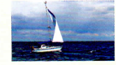
58
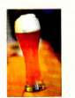
9
INFO
bin geschwommen · bin gesegelt · bin gesprungen
bWer hat das schon gemacht? Fragen Sie im Kurs und notieren Sie die Namen. Finden Sie zu jeder Aktivität mindestens eine Person?
Aktionsseiten95
Aktionsseiten
KB | S. 63 Lektion 117
Eine E-Mail schreiben
aLesen Sie Davids Kalender und schreiben Sie zu zweit eine E-Mail.
Montag 29.05.
Dienstag 30.05.
08:00
8:30 – 10:30 Büro / arbeiten
09:00
10:00
10:30
10:30 – 11:00 Termin Dr. Gregarek
11:00
12:00
12:30 – 13:30 mit Lutz essen
13:00
14:00
13:30 – 16:00 Büro / arbeiten
15:00
16:00
16:00 – 17:00 einkaufen
17:00
18:00
18:30 Fußball spielen
19:00
20:00
Notizen: Lena anrufen – Geburtstag!
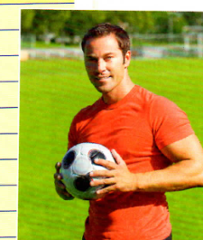
Betreff: Re: Wie geht's?
Liebe Sabine,
Und Du, was hast Du gemacht?
Liebe Grüße David
bUnd Sie? Was haben Sie heute / gestern / letzte Woche gemacht? Schreiben Sie eine E-Mail an Ihre Partnerin / Ihren Partner.
Aktionsseiten96
اضغط على الكلمة لمعناها بالمصري · كبّر للقراءة · اسحب يمين أو شمال للتقليب